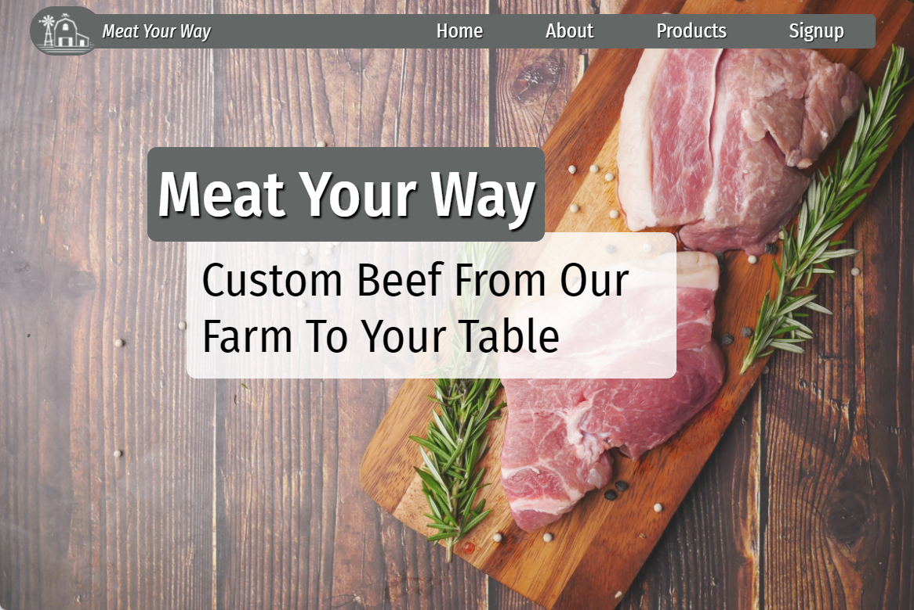
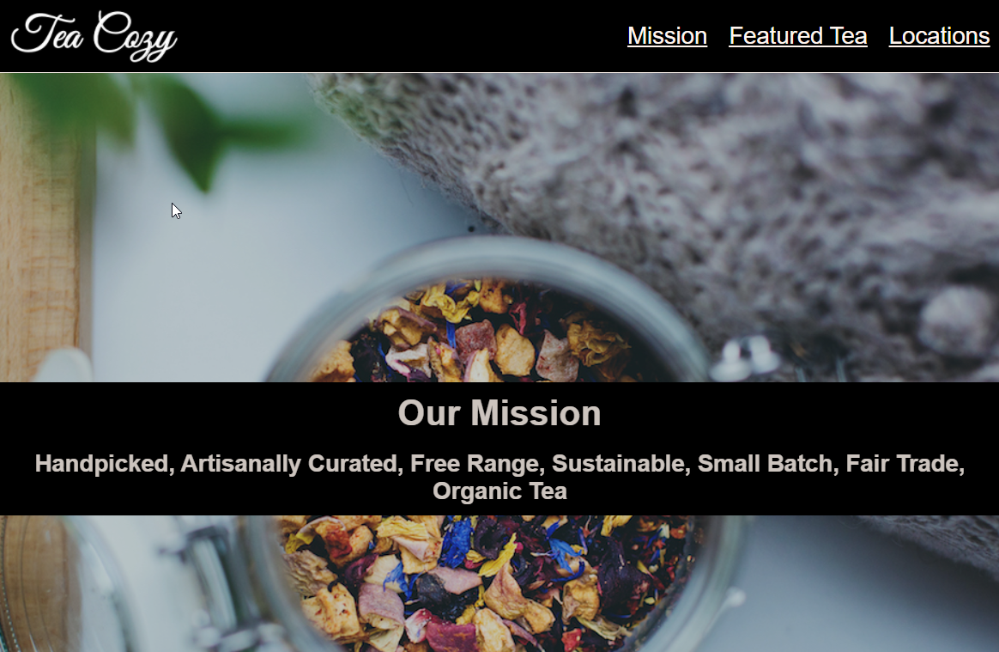

Exploring Programming through Codecademy
I have been interested in programming for a number of years, but have never had the opportunity to give time to it...until recently. This interest turned into a pro account on Codecademy.com. With my love for learning in general and my past enjoyment of learning languages (bachelors degree in Biblical Languages), I quickly found I enjoy learning programming languages. I first tackled the beginner and intermediate Python courses, along with the courses on Natural Language Processing, Pandas, and Exploratory Data Analysis. Although I really enjoyed these courses, I wanted to continue to expand my basic understanding of different languages. With that goal in mind, I started the Full-Stack Engineer career path.
This website reflects what I have learned through this curriculum (along with a few google searches). Check out my projects below, my humble GitHub account, or connect with me on LinkedIn.
Projects
Meat Your Way
Business Website
This project is a rebuild of a website for a family business. This was a project focused on practicing Flexbox.
AFC Richmond Fan Club
Responsive Club Website
Fake football club. Amazing TV show. Check out Ted Lasso! This project was focused on practicing responsive web design.

HTML Cheatsheet
First Webpage Project
This project was an early project in the Codecademy HTML/CSS curriculum. It was focused on practicing building a table.

Tea Cozy
Codecademy Design Project
This was the first responsive web design project. A design spec and assets were provided but I was required to build it from scratch.

Brian Levings
Product Manager
@ Kimray
Currently learning web development through Codecademy's Full-Stack Engineer career path